Análisis y modelamiento#
!pip install pyreadstat
Requirement already satisfied: pyreadstat in c:\users\henry\miniconda3\envs\ml_venv\lib\site-packages (1.2.8)
Requirement already satisfied: pandas>=1.2.0 in c:\users\henry\miniconda3\envs\ml_venv\lib\site-packages (from pyreadstat) (2.2.3)
Requirement already satisfied: numpy>=1.22.4 in c:\users\henry\miniconda3\envs\ml_venv\lib\site-packages (from pandas>=1.2.0->pyreadstat) (1.26.4)
Requirement already satisfied: python-dateutil>=2.8.2 in c:\users\henry\miniconda3\envs\ml_venv\lib\site-packages (from pandas>=1.2.0->pyreadstat) (2.9.0.post0)
Requirement already satisfied: pytz>=2020.1 in c:\users\henry\miniconda3\envs\ml_venv\lib\site-packages (from pandas>=1.2.0->pyreadstat) (2025.1)
Requirement already satisfied: tzdata>=2022.7 in c:\users\henry\miniconda3\envs\ml_venv\lib\site-packages (from pandas>=1.2.0->pyreadstat) (2025.1)
Requirement already satisfied: six>=1.5 in c:\users\henry\miniconda3\envs\ml_venv\lib\site-packages (from python-dateutil>=2.8.2->pandas>=1.2.0->pyreadstat) (1.17.0)
[notice] A new release of pip is available: 25.0.1 -> 25.1.1
[notice] To update, run: python.exe -m pip install --upgrade pip
import pandas as pd
import numpy as np
import seaborn as sns
from scipy import stats
import matplotlib.pyplot as plt
import matplotlib.cm as cm
import plotly.express as px
import plotly.graph_objects as go
from plotly.subplots import make_subplots
import pyreadstat
from IPython.core.display import display, HTML
import plotly.graph_objects as go
from plotly.subplots import make_subplots
import json
import os
import requests
import plotly.io as pio
pio.renderers.default = "notebook" # Para Jupyter Notebook
from sklearn.model_selection import train_test_split
from sklearn.preprocessing import LabelEncoder, OneHotEncoder
from sklearn.compose import ColumnTransformer
from sklearn.pipeline import Pipeline
from sklearn.linear_model import LogisticRegression
from sklearn.ensemble import RandomForestClassifier
from sklearn.metrics import classification_report, accuracy_score, confusion_matrix
from sklearn.preprocessing import OrdinalEncoder
from sklearn.metrics import accuracy_score, f1_score, precision_score, recall_score, confusion_matrix
import plotly.graph_objects as go
from plotly.subplots import make_subplots
import plotly.io as pio
# Set the renderer explicitly
pio.renderers.default = 'notebook'
from sklearn.preprocessing import StandardScaler, OneHotEncoder
from sklearn.cluster import KMeans
from sklearn.pipeline import Pipeline
from sklearn.compose import ColumnTransformer
from sklearn.decomposition import PCA
from sklearn.metrics import silhouette_score
import geopandas as gpd
import unicodedata
C:\Users\henry\AppData\Local\Temp\ipykernel_40100\1894033739.py:10: DeprecationWarning:
Importing display from IPython.core.display is deprecated since IPython 7.14, please import from IPython display
data_path = 'C:/Users/henry/Documents/jbook/Cacervix/datos/'
# data = pyreadstat.read_sav(data_path + 'CACU1985A2023.sav')
# enfermedades = pd.read_excel(data_path + 'enfermedades.xlsx')
# poblacion_mujeres = pd.read_excel(data_path + 'poblacion_mujeres.xlsx')
data = pd.read_excel(data_path + 'data_final.xlsx')
del data['AÑO.1']
display(HTML(data.tail().to_html()))
| DEPARTAMENTO | DEPARTAMENTO DE RESIDENCIA | MUNICIPIO | MUNICIPIO DE RESIDENCIA | AÑO | MES | SEX | ESTADO_CIVIL | NIVEL_EDUCACION | GRUPO_ETARIO | FECHA | AREA_DEFUN | SITIO_DEFUN | ETNIA | AREA DE RESIDENCIA | SEGURIDAD SOCIAL | C_PAT1_DESCRIPCION | C_ANT3_DESCRIPCION | C_ANT2_DESCRIPCION | C_ANT1_DESCRIPCION | C_DIR1_DESCRIPCION | Total Mujeres | PIB | |
|---|---|---|---|---|---|---|---|---|---|---|---|---|---|---|---|---|---|---|---|---|---|---|---|
| 58930 | RISARALDA | RISARALDA | PEREIRA | PEREIRA | 2023 | 12 | Femenino | Soltero | Primaria | 35-39 | 2023-12 | URBANA | HOSPITAL O CLÍNICA | Ninguno de las anteriores | Cabecera municipal | Subsidiado | No patología | No patología | No patología | No patología | No patología | 191824 | 26404.0 |
| 58931 | AMAZONAS | AMAZONAS | LETICIA | LETICIA | 2023 | 4 | Femenino | Soltero | Superior | 50-54 | 2023-04 | URBANA | HOSPITAL O CLÍNICA | Ninguno de las anteriores | Cabecera municipal | Subsidiado | No patología | No patología | No patología | No patología | No patología | 3543877 | 1213.0 |
| 58932 | META | META | VILLAVICENCIO | VILLAVICENCIO | 2023 | 11 | Femenino | Viudo | Secundaria | 45-49 | 2023-11 | URBANA | OTRO SITIO | Ninguno de las anteriores | Cabecera municipal | Vinculado | No patología | No patología | No patología | No patología | No patología | 495605 | 53797.0 |
| 58933 | VALLE DEL CAUCA | VALLE DEL CAUCA | CALI | CALI | 2023 | 1 | Femenino | Unión Libre, divorciado, otro | Primaria | 75-79 | 2023-01 | URBANA | HOSPITAL O CLÍNICA | Ninguno de las anteriores | Cabecera municipal | Subsidiado | No patología | No patología | No patología | No patología | No patología | 46584 | 153564.0 |
| 58934 | BOGOTÁ, D.C. | BOGOTÁ, D.C. | BOGOTÁ D.C. | BOGOTÁ D.C. | 2023 | 12 | Femenino | Casado | Secundaria | 70-74 | 2023-12 | URBANA | HOSPITAL O CLÍNICA | Ninguno de las anteriores | Cabecera municipal | Contributivo | No patología | No patología | No patología | No patología | No patología | 537565 | 395438.0 |
shapefile_path = (data_path + "Municipios/Municipios.shp")
colombia = gpd.read_file(shapefile_path)
# print(colombia.head())
colombia.plot(edgecolor='black', figsize=(10, 12))
plt.title("Mapa base de Colombia - Municipios o Departamentos")
plt.axis("off")
plt.show()
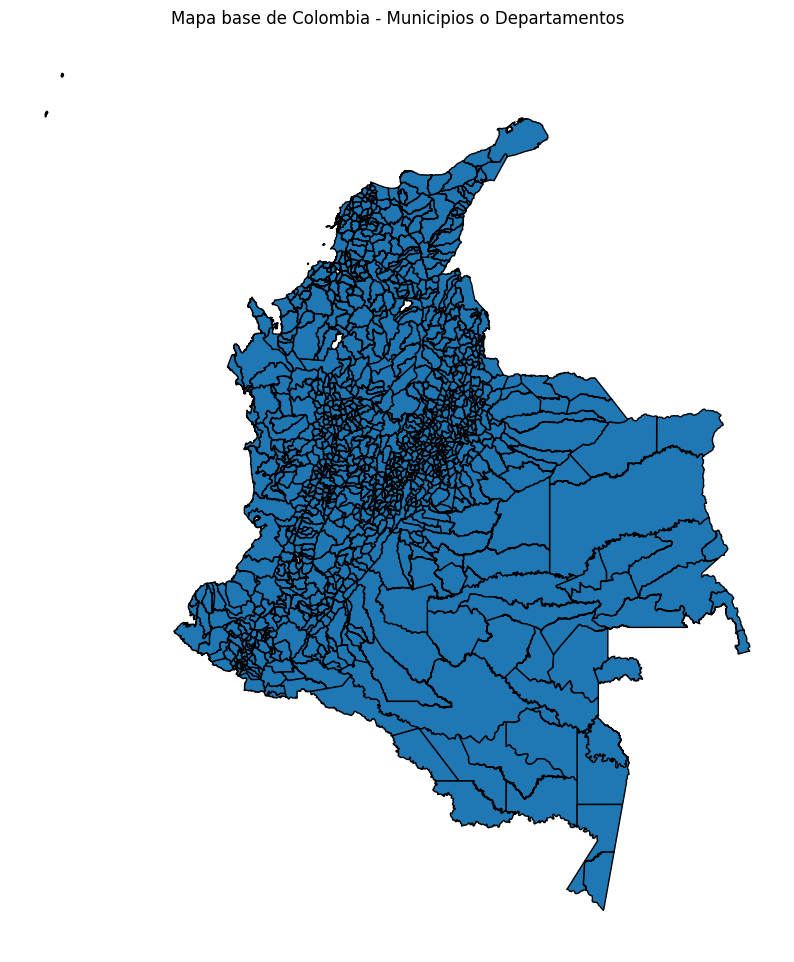
def normalizar(texto):
if pd.isnull(texto):
return ""
texto = str(texto).upper()
texto = unicodedata.normalize('NFKD', texto).encode('ASCII', 'ignore').decode('utf-8')
return texto
Crear variable para comorbilidad#
cols_comorbilidades = [
"C_PAT1_DESCRIPCION",
"C_ANT1_DESCRIPCION",
"C_ANT2_DESCRIPCION",
"C_ANT3_DESCRIPCION",
"C_DIR1_DESCRIPCION"
]
Se crea variable de si tiene o no tiene comorbilidad
# Variable binaria: Tiene al menos una comorbilidad (distinta de "No patología")
data["TIENE_COMORBILIDAD"] = data[cols_comorbilidades].apply(
lambda row: any(str(val).strip().lower() != "no patología" for val in row),
axis=1
)
# Conteo de comorbilidades presentes
data["NUM_COMORBILIDADES"] = data[cols_comorbilidades].apply(
lambda row: sum(1 for val in row if str(val).strip().lower() != "no patología"),
axis=1
)
# Guardar el archivo actualizado
output_path = "C:/Users/henry/Documents/jbook/Cacervix/datos/data_comorbilidades_actualizadas.xlsx"
data.to_excel(output_path, index=False)
output_path
'C:/Users/henry/Documents/jbook/Cacervix/datos/data_comorbilidades_actualizadas.xlsx'
data = pd.read_excel(data_path + 'data_comorbilidades_actualizadas.xlsx')
display(HTML(data.tail().to_html()))
| DEPARTAMENTO | DEPARTAMENTO DE RESIDENCIA | MUNICIPIO | MUNICIPIO DE RESIDENCIA | AÑO | MES | SEX | ESTADO_CIVIL | NIVEL_EDUCACION | GRUPO_ETARIO | FECHA | AREA_DEFUN | SITIO_DEFUN | ETNIA | AREA DE RESIDENCIA | SEGURIDAD SOCIAL | C_PAT1_DESCRIPCION | C_ANT3_DESCRIPCION | C_ANT2_DESCRIPCION | C_ANT1_DESCRIPCION | C_DIR1_DESCRIPCION | Total Mujeres | PIB | TIENE_COMORBILIDAD | NUM_COMORBILIDADES | |
|---|---|---|---|---|---|---|---|---|---|---|---|---|---|---|---|---|---|---|---|---|---|---|---|---|---|
| 58930 | RISARALDA | RISARALDA | PEREIRA | PEREIRA | 2023 | 12 | Femenino | Soltero | Primaria | 35-39 | 2023-12 | URBANA | HOSPITAL O CLÍNICA | Ninguno de las anteriores | Cabecera municipal | Subsidiado | No patología | No patología | No patología | No patología | No patología | 191824 | 26404.0 | False | 0 |
| 58931 | AMAZONAS | AMAZONAS | LETICIA | LETICIA | 2023 | 4 | Femenino | Soltero | Superior | 50-54 | 2023-04 | URBANA | HOSPITAL O CLÍNICA | Ninguno de las anteriores | Cabecera municipal | Subsidiado | No patología | No patología | No patología | No patología | No patología | 3543877 | 1213.0 | False | 0 |
| 58932 | META | META | VILLAVICENCIO | VILLAVICENCIO | 2023 | 11 | Femenino | Viudo | Secundaria | 45-49 | 2023-11 | URBANA | OTRO SITIO | Ninguno de las anteriores | Cabecera municipal | Vinculado | No patología | No patología | No patología | No patología | No patología | 495605 | 53797.0 | False | 0 |
| 58933 | VALLE DEL CAUCA | VALLE DEL CAUCA | CALI | CALI | 2023 | 1 | Femenino | Unión Libre, divorciado, otro | Primaria | 75-79 | 2023-01 | URBANA | HOSPITAL O CLÍNICA | Ninguno de las anteriores | Cabecera municipal | Subsidiado | No patología | No patología | No patología | No patología | No patología | 46584 | 153564.0 | False | 0 |
| 58934 | BOGOTÁ, D.C. | BOGOTÁ, D.C. | BOGOTÁ D.C. | BOGOTÁ D.C. | 2023 | 12 | Femenino | Casado | Secundaria | 70-74 | 2023-12 | URBANA | HOSPITAL O CLÍNICA | Ninguno de las anteriores | Cabecera municipal | Contributivo | No patología | No patología | No patología | No patología | No patología | 537565 | 395438.0 | False | 0 |
Clustering general por zona rural vs urbana#
Dividimos los datos en rurales vs urbanos#
urbana_data = data[data["AREA DE RESIDENCIA"].str.lower().str.contains("cabecera")]
rural_data = data[~data["AREA DE RESIDENCIA"].str.lower().str.contains("cabecera")]
# Mostrar la cantidad de registros en cada subdataset
len(urbana_data), len(rural_data)
(49411, 9524)
Seleccionamos las variables a utilizar y hacemos el análisis para rural
# Variables seleccionadas
vars_categoricas = [
"DEPARTAMENTO DE RESIDENCIA", "MUNICIPIO DE RESIDENCIA",
"ESTADO_CIVIL", "NIVEL_EDUCACION", "GRUPO_ETARIO",
"ETNIA", "SEGURIDAD SOCIAL"
]
vars_numericas = ["PIB", "TIENE_COMORBILIDAD", "NUM_COMORBILIDADES"]
Transformas y estandarizamos las variables a utilizar
preprocessor = ColumnTransformer(transformers=[
("cat", OneHotEncoder(handle_unknown="ignore"), vars_categoricas),
("num", StandardScaler(), vars_numericas)
])
X_processed = preprocessor.fit_transform(rural_data)
# Validación del número óptimo de clusters con Silhouette Score
silhouette_scores = []
k_range = range(2, 10)
for k in k_range:
kmeans = KMeans(n_clusters=k, random_state=42)
labels = kmeans.fit_predict(X_processed)
score = silhouette_score(X_processed, labels)
silhouette_scores.append(score)
plt.figure(figsize=(8, 5))
plt.plot(k_range, silhouette_scores, marker='o')
plt.title("Silhouette Score para diferentes valores de K (Zona Rural)")
plt.xlabel("Número de clusters (k)")
plt.ylabel("Silhouette Score")
plt.grid(True)
plt.tight_layout()
plt.show()
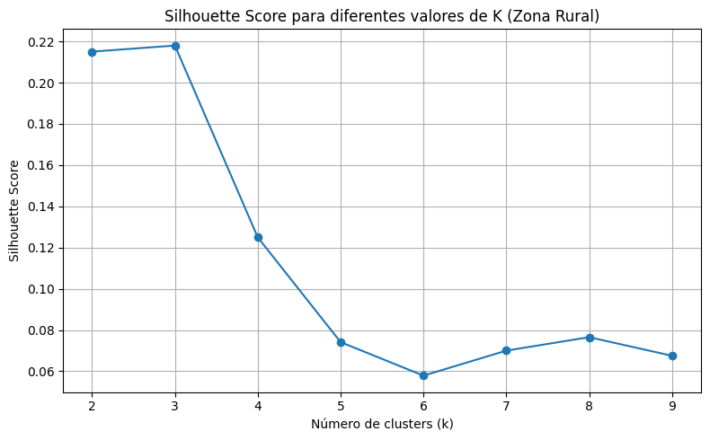
Se ajusta el cluster con k= 3
pipeline = Pipeline(steps=[
("preprocessing", preprocessor),
("kmeans", KMeans(n_clusters=3, random_state=42))
])
pipeline.fit(rural_data)
Pipeline(steps=[('preprocessing',
ColumnTransformer(transformers=[('cat',
OneHotEncoder(handle_unknown='ignore'),
['DEPARTAMENTO DE RESIDENCIA',
'MUNICIPIO DE RESIDENCIA',
'ESTADO_CIVIL',
'NIVEL_EDUCACION',
'GRUPO_ETARIO', 'ETNIA',
'SEGURIDAD SOCIAL']),
('num', StandardScaler(),
['PIB', 'TIENE_COMORBILIDAD',
'NUM_COMORBILIDADES'])])),
('kmeans', KMeans(n_clusters=3, random_state=42))])In a Jupyter environment, please rerun this cell to show the HTML representation or trust the notebook. On GitHub, the HTML representation is unable to render, please try loading this page with nbviewer.org.
Pipeline(steps=[('preprocessing',
ColumnTransformer(transformers=[('cat',
OneHotEncoder(handle_unknown='ignore'),
['DEPARTAMENTO DE RESIDENCIA',
'MUNICIPIO DE RESIDENCIA',
'ESTADO_CIVIL',
'NIVEL_EDUCACION',
'GRUPO_ETARIO', 'ETNIA',
'SEGURIDAD SOCIAL']),
('num', StandardScaler(),
['PIB', 'TIENE_COMORBILIDAD',
'NUM_COMORBILIDADES'])])),
('kmeans', KMeans(n_clusters=3, random_state=42))])ColumnTransformer(transformers=[('cat', OneHotEncoder(handle_unknown='ignore'),
['DEPARTAMENTO DE RESIDENCIA',
'MUNICIPIO DE RESIDENCIA', 'ESTADO_CIVIL',
'NIVEL_EDUCACION', 'GRUPO_ETARIO', 'ETNIA',
'SEGURIDAD SOCIAL']),
('num', StandardScaler(),
['PIB', 'TIENE_COMORBILIDAD',
'NUM_COMORBILIDADES'])])['DEPARTAMENTO DE RESIDENCIA', 'MUNICIPIO DE RESIDENCIA', 'ESTADO_CIVIL', 'NIVEL_EDUCACION', 'GRUPO_ETARIO', 'ETNIA', 'SEGURIDAD SOCIAL']
OneHotEncoder(handle_unknown='ignore')
['PIB', 'TIENE_COMORBILIDAD', 'NUM_COMORBILIDADES']
StandardScaler()
KMeans(n_clusters=3, random_state=42)
# Obtener etiquetas y agregarlas al DataFrame
rural_data["CLUSTER"] = pipeline.named_steps["kmeans"].labels_
C:\Users\henry\AppData\Local\Temp\ipykernel_40100\567699832.py:2: SettingWithCopyWarning:
A value is trying to be set on a copy of a slice from a DataFrame.
Try using .loc[row_indexer,col_indexer] = value instead
See the caveats in the documentation: https://pandas.pydata.org/pandas-docs/stable/user_guide/indexing.html#returning-a-view-versus-a-copy
rural_data.to_excel("rural_data_cluster_general_k3.xlsx", index=False)
Resumen y agrupación de los clusteres rurales#
numeric_summary = rural_data.groupby("CLUSTER")[["PIB", "NUM_COMORBILIDADES", "TIENE_COMORBILIDAD"]].mean()
# Moda de variables categóricas por cluster
categorical_vars = ["DEPARTAMENTO DE RESIDENCIA", "MUNICIPIO", "MUNICIPIO DE RESIDENCIA",
"SEX", "ESTADO_CIVIL", "NIVEL_EDUCACION", "GRUPO_ETARIO",
"ETNIA", "SEGURIDAD SOCIAL"]
categorical_summary = rural_data.groupby("CLUSTER")[categorical_vars].agg(lambda x: x.mode().iloc[0])
cluster_summary = pd.concat([numeric_summary, categorical_summary], axis=1)
cluster_summary
| PIB | NUM_COMORBILIDADES | TIENE_COMORBILIDAD | DEPARTAMENTO DE RESIDENCIA | MUNICIPIO | MUNICIPIO DE RESIDENCIA | SEX | ESTADO_CIVIL | NIVEL_EDUCACION | GRUPO_ETARIO | ETNIA | SEGURIDAD SOCIAL | |
|---|---|---|---|---|---|---|---|---|---|---|---|---|
| CLUSTER | ||||||||||||
| 0 | 24737.945138 | 2.486524 | 1.000000 | ANTIOQUIA | BOGOTÁ, D.C. | PASTO | Femenino | Soltero | Primaria | 50-54 | Ninguno de las anteriores | Subsidiado |
| 1 | 221513.898662 | 0.873805 | 0.338432 | ANTIOQUIA | BOGOTÁ, D.C. | MEDELLÍN | Femenino | Soltero | Primaria | 60-64 | Ninguno de las anteriores | Subsidiado |
| 2 | 16047.992037 | 0.000000 | 0.000000 | CAUCA | MONTERÍA | MONTERÍA | Femenino | Soltero | Primaria | 55-59 | Ninguno de las anteriores | Subsidiado |
sns.boxplot(data=rural_data, x="CLUSTER", y="NUM_COMORBILIDADES")
plt.title("Comorbilidades por Cluster")
plt.show()
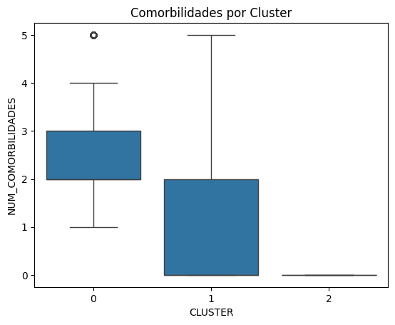
Ubicación geográfica de cada cluster#
# Agrupar por municipio para obtener el cluster más común
cluster_por_mpio = rural_data.groupby("MUNICIPIO DE RESIDENCIA")["CLUSTER"] \
.agg(lambda x: x.value_counts().idxmax()).reset_index()
# Renombrar la columna para que coincida con el shapefile
cluster_por_mpio.rename(columns={"MUNICIPIO DE RESIDENCIA": "MPIO_CNMBR"}, inplace=True)
print(colombia.columns)
Index(['OBJECTID_1', 'DPTO_CCDGO', 'MPIO_CCDGO', 'Shape_Leng', 'OBJECTID',
'MPIO_CNMBR', 'DESCRPCION', 'DEPTO', 'P_ENERSI', 'P_ENERNO',
'P_ALCANSI', 'P_ALCANNO', 'P_ACUESI', 'P_ACUENO', 'P_GASNSI',
'P_GASNNO', 'P_GASNNOIN', 'P_TELEFSI', 'P_TELEFNO', 'P_TELEFNOI',
'ShapeSTAre', 'ShapeSTLen', 'geometry'],
dtype='object')
cluster_por_mpio["MPIO_CNMBR"] = cluster_por_mpio["MPIO_CNMBR"].str.upper()
colombia["MPIO_CNMBR"] = colombia["MPIO_CNMBR"].str.upper() #Mayúscyla
cluster_por_mpio["MPIO_CNMBR"] = cluster_por_mpio["MPIO_CNMBR"].apply(normalizar)
colombia["MPIO_CNMBR"] = colombia["MPIO_CNMBR"].apply(normalizar)
# Merge del shapefile con la información del cluster por municipio
colombia_clusterizada = colombia.merge(cluster_por_mpio, on="MPIO_CNMBR", how="left")
colombia_clusterizada.plot(
column="CLUSTER",
cmap="Set2",
legend=True,
edgecolor="black",
figsize=(10, 10)
)
plt.title("Distribución de Clusters por Municipio (Zona Rural)")
plt.axis("off")
plt.show()
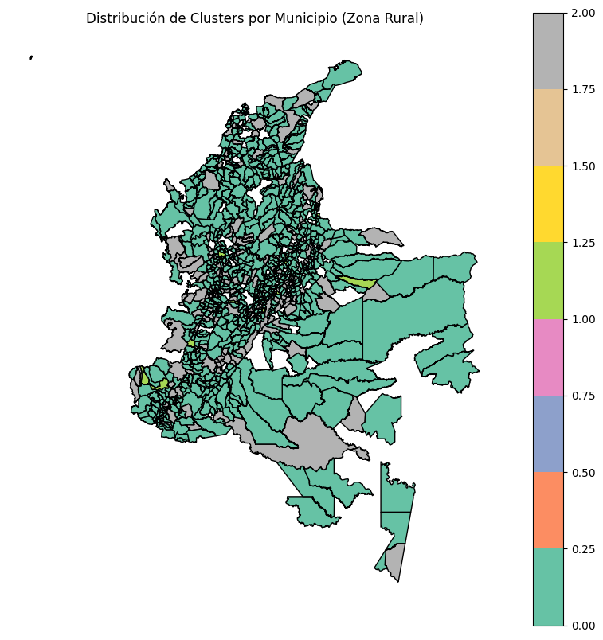
colombia_clusterizada.plot(
column="CLUSTER",
cmap="Set2",
legend=True,
edgecolor="black",
figsize=(14, 16)
)
plt.title("Distribución de Clusters por Municipio (Zona Rural)")
plt.axis("off")
plt.show()
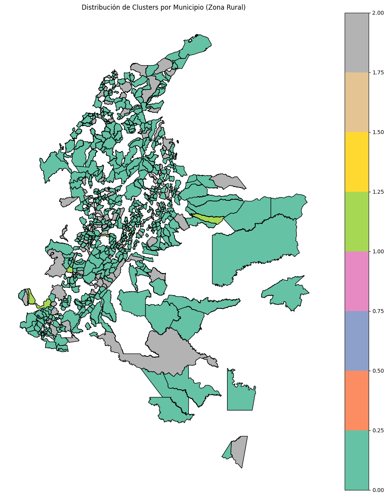
municipios_unidos = cluster_por_mpio["MPIO_CNMBR"].unique()
municipios_mapa = colombia["MPIO_CNMBR"].unique()
faltantes = set(municipios_mapa) - set(municipios_unidos)
print("Municipios sin cluster asignado:", len(faltantes))
print(faltantes)
Municipios sin cluster asignado: 428
{'NEMOCON', 'PUERTO ARICA', 'JUNIN', 'PARAMO', 'CHIPATA', 'UBATE', 'SAN ANDRES SOTAVENTO', 'CIENAGA DE ORO', 'JORDAN', 'CERRO SAN ANTONIO', 'COLON', 'LIBANO', 'TIMANA', 'HATONUEVO', 'SAN SEBASTIAN DE BUENAVISTA', 'SAN AGUSTIN', 'EL PLAYON', 'SAN MARTIN', 'TUQUERRES', 'SAN ZENON', 'SORACA', 'CEPITA', 'ITSMINA', 'PROVIDENCIA Y SANTA CATALINA', 'RAQUIRA', 'CALARCA', 'CACAHUAL', 'BUSBANZA', 'SOPLAVIENTO', 'CONDOTO', 'CARMEN DE APICALA', 'PUERTO ALEGRIA', 'EL CARMEN DE BOLIVAR', 'OROCUE', 'ENCINO', 'ALBAN', 'PIOJO', 'GUACHETA', 'LANDAZURI', 'BARICHARA', 'SOMONDOCO', 'ROBERTO PAYAN', 'CHACHAGUI', 'YOLOMBO', 'SAN MARTIN DE LOBA', 'EBEJICO', 'GAMBITA', 'TUBARA', 'PALMAR DE VARELA', 'BOLIVAR', 'FUQUENE', 'TOGUI', 'GUATICA', 'SIMITI', 'ANGELOPOLIS', 'CURITI', 'YONDO', 'MAPIRIPAN', 'CAPARRAPI', 'ANZOATEGUI', 'VILLA MARIA', 'EL RETEN', 'ARBELAEZ', 'CURRILLO', 'LOURDES', 'SAN ROSA VITERBO', 'CORRALES', 'PEDRAZA', 'BELEN DE UMBRIA', 'ABRIAQUI', 'CUCAITA', 'SAN JUAN DE RIO SECO', 'PACORA', 'SONSON', 'FUNDACION', 'PONEDERA', 'MANI', 'PATIA', 'SESQUILE', 'FOMEQUE', 'TADO', 'CARCASI', 'MAPIRIPANA', 'RONDON', 'TOCANCIPA', 'SAN JOSE DEL FRAGUA', 'TITIRIBI', 'EL TABLON DE GOMEZ', 'MO?ITOS', 'MACHETA', 'LLORO', 'CIUDAD BOLIVAR', 'YACOPI', 'FRANCISCO PIZARRO', 'TUMACO', 'CIENEGA', 'SAMANA', 'SANTA ROSALIA', 'TULUA', 'SAN JOSE DEL PALMAR', 'NUEVO COLON', 'GACHANCIPA', 'SANTA.ROSA DE OSOS', 'EL PAUJIL', 'CHINACOTA', 'MACARAVITA', 'EL GUAMO', 'SANTO TOMAS', 'BELALCAZAR', 'CORDOBA', 'BAJO BAUDO', 'PAEZ', 'LEJANIAS', 'DON MATIAS', 'JERUSALEN', 'BAGADO', 'SANTA HELENA DEL OPON', 'MORICHAL', 'CHIGORODO', 'ZAMBRANO', 'CAJICA', 'ZIPACON', 'VILLAGOMEZ', 'GRAMALOTE', 'NATAGA', 'CHINU', 'JERICO', 'LA CAPILLA', 'SACHICA', 'NECHI', 'HERRAN', 'CHITAGA', 'BARRANCO MINA', 'SOCOTA', 'NOVITA', 'YALI', 'NECOCLI', 'GUALMATAN', 'MARIQUITA', 'TENZA', 'RIOFRIO', 'CONSACA', 'APARTADO', 'NUNCHIA', 'PUERTO LOPEZ', 'AMAGA', 'BELMIRA', 'EL PIÑON', 'GUAPOTA', 'COVARACHIA', 'TARAPACA', 'SIBATE', 'SAN JOSE DE PARE', 'BOJACA', 'LA GUADALUPE', 'SAN PABLO BORBUR', 'SOATA', 'ELIAS', 'SAN ANTONIO DE TEQUENDAMA', 'GOMEZ PLATA', 'GONZALEZ', 'ALTO BAUDO', 'PUERTO RONDON', 'ARMERO', 'QUIPAMA', 'MONTECRISTO', 'ITAGUI', 'MITU', 'POPAYAN', 'TOTORO', 'BOJAYA', 'CHIRIGUANA', 'RIO VIEJO', 'INIRIDA', 'CUCUNUBA', 'SANTA MARIA', 'CHARTA', 'LERIDA', 'CUCUTA', 'ACHI', 'REPELON', 'UTICA', 'SUPIA', 'ACACIAS', 'CHIQUIZA', 'UNION PANAMERICANA', 'USIACURI', 'SANTIAGO DE TOLU', 'PACOA', 'SANTA LUCIA', 'PAZ DE RIO', 'MAGANGUE', 'SUPATA', 'SAHAGUN', 'VEGACHI', 'BETEITIVA', 'OICATA', 'ACANDI', 'CACERES', 'VIOTA', 'SAN VICENTE DEL CAGUAN', 'PAPUNAHUA', 'FOSCA', 'ATRATO', 'VILLAGARZON', 'BOGOTA', 'SUAN', 'SURATA', 'SACAMA', 'ALCALA', 'CARMEN DE VIBORAL', 'GAMEZA', 'SAN SEBASTIAN', 'HACARI', 'CHINCHINA', 'PUERTO ASIS', 'GENOVA', 'BELTRAN', 'TORIBIO', 'FUSAGASUGA', 'MEDELLIN', 'SAN CARLOS GUAROA', 'VALLE DE SAN JOSE', 'VILLAPINZON', 'GACHALA', 'POTOSI', 'PUERTO BERRIO', 'CALIFORNIA', 'PALMAR', 'JESUS MARIA', 'PUERTO CONCORDIA', 'GUAYATA', 'QUIBDO', 'SAN MIGUEL DE SEMA', 'SAN JERONIMO', 'TIBU', 'SAN EDUARDO', 'SAN JOSE DE LA MONTAÑA', 'CACHIRA', 'TURBANA', 'ARIGUANI', 'IQUIRA', 'DISTRACCION', 'SITIONUEVO', 'LA JAGUA DEL PILAR', 'CARTAGENA DEL CHAIRA', 'UMBITA', 'CARTAGENA', 'LEGUIZAMO', 'MURINDO', 'SINCE', 'AMBALEMA', 'PUERTO BOYACA', 'YAGUARA', 'SAN JACINTO DEL CAUCA', 'MONIQUIRA', 'SOPO', 'GIRALDO', 'MALAGA', 'INZA', 'CHAMEZA', 'SAN FELIPE', 'CONCEPCION', 'ZIPAQUIRA', 'SAN JOSE DE MIRANDA', 'GUEPSA', 'MAGUI', 'CUBARA', 'EL AGUILA', 'SAN JOSE DEL GUAVIARE', 'ANDALUCIA', 'LOPEZ', 'GUAPI', 'CHOACHI', 'VALPARAISO', 'SORA', 'SANTA BARBARA', 'FACATATIVA', 'GACHANTIVA', 'EL PEÑON', 'SAN JUANITO', 'MUTATA', 'MOMPOS', 'JAMBALO', 'SAMPUES', 'EL CARMEN DE CHUCURI', 'SANTA BARBARA DE PINTO', 'TIMBIO', 'TIMBIQUI', 'SUAREZ', 'CARACOLI', 'VIRACACHA', 'TARAZA', 'CERETE', 'MALAMBO', 'GALAN', 'UBALA', 'SAN PEDRO DE URABA', 'MARIPI', 'TAMESIS', 'CHIQUINQUIRA', 'MUTISCUA', 'MILAN', 'NUQUI', 'SABOYA', 'GUTIERREZ', 'MONGUI', 'TUTAZA', 'GARZON', 'TINJACA', 'TUNUNGUA', 'IZA', 'GACHETA', 'SAN JUAN BETULIA', 'SABANAS DE SAN ANGEL', 'MARIA LA BAJA', 'TOLU VIEJO', 'CUCUTILLA', 'CHARALA', 'APIA', 'PURISIMA', 'VIANI', 'LA URIBE', 'SAN JOAQUIN', 'JAMUNDI', 'PUERTO GAITAN', 'SUSACON', 'BARRANCA DE UPIA', 'SANTA SOFIA', 'VIGIA DEL FUERTE', 'GUICAN', 'JARDIN', 'CAQUEZA', 'LA UNION', 'TOPAIPI', 'CAJIBIO', 'SANDONA', 'CARMEN DEL DARIEN', 'RECETOR', 'QUETAME', 'CUASPUD', 'TOPAGA', 'ANORI', 'PUERTO GUZMAN', 'GIRON', 'PAYA', 'IMUES', 'PIENDAMO', 'MONTERIA', 'BELEN DE LOS ANDAQUIES', 'ALEJANDRIA', 'GUATAPE', 'NARINO', 'BUGA', 'CANTON DE SAN PABLO', 'ZAPAYAN', 'GUAYABAL DE SIQUIMA', 'TAMARA', 'LOS CORDOBAS', 'CIENAGA', 'YAVARATE', 'VELEZ', 'SAN JUAN DE URABA', 'ANCUYA', 'CARURU', 'CONTRATACION', 'RIO QUITO', 'CHALAN', 'SIPI', 'SANTAFE DE ANTIOQUIA', 'FLORIAN', 'VISTA HERMOSA', 'CHIA', 'BURITICA', 'SUTAMARCHAN', 'SAN ANDRES', 'BAHIA SOLANO', 'CUITIVA', 'CURUMANI', 'TIQUISIO', 'QUINCHIA', 'BOYACA', 'MIRITI - PARANA', 'TURMEQUE', 'RIO IRO', 'GUAVATA', 'GUACARI', 'TARAIRA', 'GUAYABETAL', 'MONTELIBANO', 'SOTAQUIRA', 'CHOCONTA', 'SAN VICENTE', 'AGUSTIN CODAZZI', 'CACOTA', 'COCORNA', 'MISTRATO', 'IBAGUE', 'MANATI', 'MEDIO BAUDO', 'EL MOLINO', 'TIBANA', 'ABREGO', 'RIO DE ORO', 'UNGUIA', 'SOPETRAN', 'JURADO', 'CONVENCION', 'PURACE', 'PANA PANA', 'SAN JOSE', 'SAMACA', 'PULI', 'CRAVO NORTE', 'SAN VICENTE DE CHUCURI', 'COMBITA', 'GUATAQUI', 'CHAGUANI', 'RAGONVALIA', 'ENTRERRIOS', 'BELEN', 'RAMIRIQUI', 'CHIVATA', 'PURIFICACION', 'CERTEGUI', 'PISBA', 'SAN CRISTOBAL', 'ANZA'}
Cluster para zona urbana#
X_processed = preprocessor.fit_transform(urbana_data)
silhouette_scores = []
k_range = range(2, 10)
for k in k_range:
kmeans = KMeans(n_clusters=k, random_state=42)
labels = kmeans.fit_predict(X_processed)
score = silhouette_score(X_processed, labels)
silhouette_scores.append(score)
plt.figure(figsize=(8, 5))
plt.plot(k_range, silhouette_scores, marker='o')
plt.title("Silhouette Score para diferentes valores de K (Zona Rural)")
plt.xlabel("Número de clusters (k)")
plt.ylabel("Silhouette Score")
plt.grid(True)
plt.tight_layout()
plt.show()
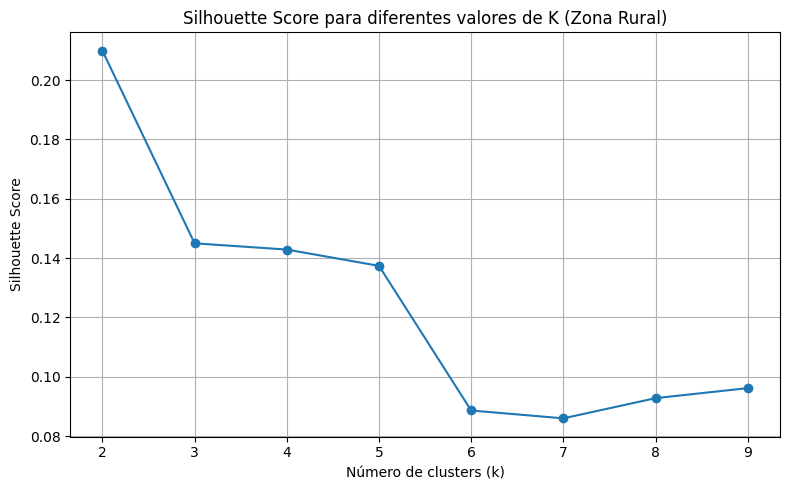
pipeline = Pipeline(steps=[
("preprocessing", preprocessor),
("kmeans", KMeans(n_clusters=2, random_state=42))
])
pipeline.fit(urbana_data)
Pipeline(steps=[('preprocessing',
ColumnTransformer(transformers=[('cat',
OneHotEncoder(handle_unknown='ignore'),
['DEPARTAMENTO DE RESIDENCIA',
'MUNICIPIO DE RESIDENCIA',
'ESTADO_CIVIL',
'NIVEL_EDUCACION',
'GRUPO_ETARIO', 'ETNIA',
'SEGURIDAD SOCIAL']),
('num', StandardScaler(),
['PIB', 'TIENE_COMORBILIDAD',
'NUM_COMORBILIDADES'])])),
('kmeans', KMeans(n_clusters=2, random_state=42))])In a Jupyter environment, please rerun this cell to show the HTML representation or trust the notebook. On GitHub, the HTML representation is unable to render, please try loading this page with nbviewer.org.
Pipeline(steps=[('preprocessing',
ColumnTransformer(transformers=[('cat',
OneHotEncoder(handle_unknown='ignore'),
['DEPARTAMENTO DE RESIDENCIA',
'MUNICIPIO DE RESIDENCIA',
'ESTADO_CIVIL',
'NIVEL_EDUCACION',
'GRUPO_ETARIO', 'ETNIA',
'SEGURIDAD SOCIAL']),
('num', StandardScaler(),
['PIB', 'TIENE_COMORBILIDAD',
'NUM_COMORBILIDADES'])])),
('kmeans', KMeans(n_clusters=2, random_state=42))])ColumnTransformer(transformers=[('cat', OneHotEncoder(handle_unknown='ignore'),
['DEPARTAMENTO DE RESIDENCIA',
'MUNICIPIO DE RESIDENCIA', 'ESTADO_CIVIL',
'NIVEL_EDUCACION', 'GRUPO_ETARIO', 'ETNIA',
'SEGURIDAD SOCIAL']),
('num', StandardScaler(),
['PIB', 'TIENE_COMORBILIDAD',
'NUM_COMORBILIDADES'])])['DEPARTAMENTO DE RESIDENCIA', 'MUNICIPIO DE RESIDENCIA', 'ESTADO_CIVIL', 'NIVEL_EDUCACION', 'GRUPO_ETARIO', 'ETNIA', 'SEGURIDAD SOCIAL']
OneHotEncoder(handle_unknown='ignore')
['PIB', 'TIENE_COMORBILIDAD', 'NUM_COMORBILIDADES']
StandardScaler()
KMeans(n_clusters=2, random_state=42)
urbana_data["CLUSTER"] = pipeline.named_steps["kmeans"].labels_
C:\Users\henry\AppData\Local\Temp\ipykernel_40100\1805390220.py:1: SettingWithCopyWarning:
A value is trying to be set on a copy of a slice from a DataFrame.
Try using .loc[row_indexer,col_indexer] = value instead
See the caveats in the documentation: https://pandas.pydata.org/pandas-docs/stable/user_guide/indexing.html#returning-a-view-versus-a-copy
urbana_data.to_excel("urban_data_cluster_general_k2.xlsx", index=False)
numeric_summary_urbana = urbana_data.groupby("CLUSTER")[["PIB", "NUM_COMORBILIDADES", "TIENE_COMORBILIDAD"]].mean()
# Moda de variables categóricas por cluster
categorical_vars = ["DEPARTAMENTO DE RESIDENCIA", "MUNICIPIO", "MUNICIPIO DE RESIDENCIA",
"SEX", "ESTADO_CIVIL", "NIVEL_EDUCACION", "GRUPO_ETARIO",
"ETNIA", "SEGURIDAD SOCIAL"]
categorical_summary_urbana = urbana_data.groupby("CLUSTER")[categorical_vars].agg(lambda x: x.mode().iloc[0])
cluster_summary_urbana = pd.concat([numeric_summary_urbana, categorical_summary_urbana], axis=1)
cluster_summary_urbana
| PIB | NUM_COMORBILIDADES | TIENE_COMORBILIDAD | DEPARTAMENTO DE RESIDENCIA | MUNICIPIO | MUNICIPIO DE RESIDENCIA | SEX | ESTADO_CIVIL | NIVEL_EDUCACION | GRUPO_ETARIO | ETNIA | SEGURIDAD SOCIAL | |
|---|---|---|---|---|---|---|---|---|---|---|---|---|
| CLUSTER | ||||||||||||
| 0 | 45890.203780 | 2.565926 | 1.0 | BOGOTÁ, D.C. | BOGOTÁ, D.C. | BOGOTÁ, D.C. | Femenino | Soltero | Primaria | 50-54 | Ninguno de las anteriores | Subsidiado |
| 1 | 44287.857854 | 0.000000 | 0.0 | BOGOTÁ, D.C. | BOGOTÁ, D.C. | BOGOTÁ, D.C. | Femenino | Soltero | Primaria | 50-54 | Ninguno de las anteriores | Subsidiado |
sns.boxplot(data=urbana_data, x="CLUSTER", y="NUM_COMORBILIDADES")
plt.title("Comorbilidades por Cluster")
plt.show()
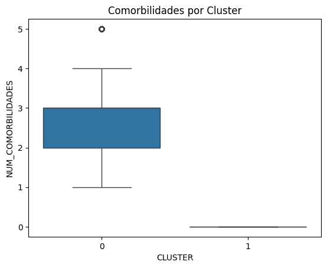
Mostrar los clusteres en el mapa de colombia
# Normalización como en el caso rural
urbana_data["MUNICIPIO DE RESIDENCIA"] = urbana_data["MUNICIPIO DE RESIDENCIA"].apply(normalizar)
colombia["MPIO_CNMBR"] = colombia["MPIO_CNMBR"].apply(normalizar)
C:\Users\henry\AppData\Local\Temp\ipykernel_40100\3403225806.py:2: SettingWithCopyWarning:
A value is trying to be set on a copy of a slice from a DataFrame.
Try using .loc[row_indexer,col_indexer] = value instead
See the caveats in the documentation: https://pandas.pydata.org/pandas-docs/stable/user_guide/indexing.html#returning-a-view-versus-a-copy
# Agrupar por municipio y obtener el cluster dominante
cluster_urbano_por_mpio = urbana_data.groupby("MUNICIPIO DE RESIDENCIA")["CLUSTER"] \
.agg(lambda x: x.value_counts().idxmax()).reset_index()
# Renombrar para que coincida con shapefile
cluster_urbano_por_mpio.rename(columns={"MUNICIPIO DE RESIDENCIA": "MPIO_CNMBR"}, inplace=True)
colombia_urbana = colombia.merge(cluster_urbano_por_mpio, on="MPIO_CNMBR", how="left")
colombia_urbana.plot(
column="CLUSTER",
cmap="Set3",
legend=True,
edgecolor="black",
figsize=(10, 10)
)
plt.title("Distribución de Clusters por Municipio (Zona Urbana)")
plt.axis("off")
plt.show()
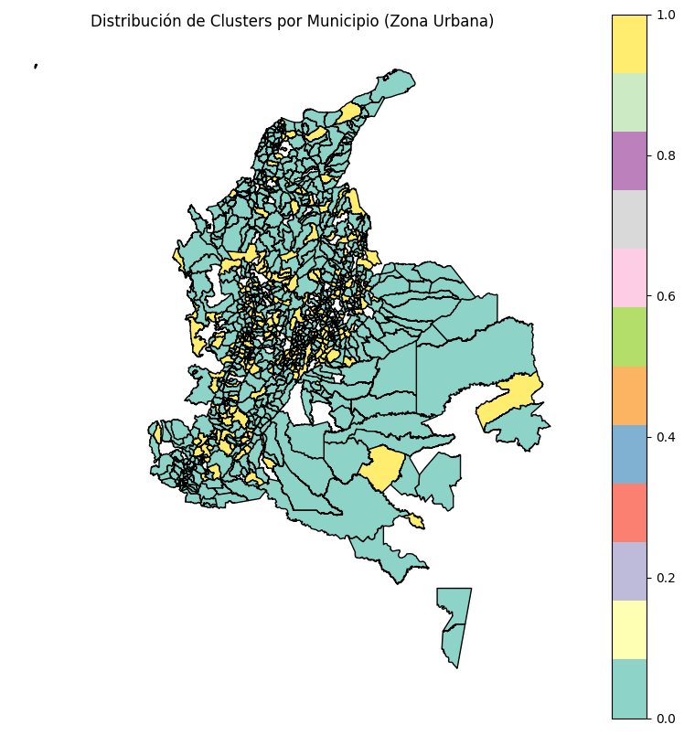
Comparación de resultados entre clusteres#
rural_data["ZONA"] = "RURAL"
urbana_data["ZONA"] = "URBANA"
# Unir ambos datasets
comparacion_data = pd.concat([rural_data, urbana_data], ignore_index=True)
C:\Users\henry\AppData\Local\Temp\ipykernel_40100\1432694004.py:1: SettingWithCopyWarning:
A value is trying to be set on a copy of a slice from a DataFrame.
Try using .loc[row_indexer,col_indexer] = value instead
See the caveats in the documentation: https://pandas.pydata.org/pandas-docs/stable/user_guide/indexing.html#returning-a-view-versus-a-copy
C:\Users\henry\AppData\Local\Temp\ipykernel_40100\1432694004.py:2: SettingWithCopyWarning:
A value is trying to be set on a copy of a slice from a DataFrame.
Try using .loc[row_indexer,col_indexer] = value instead
See the caveats in the documentation: https://pandas.pydata.org/pandas-docs/stable/user_guide/indexing.html#returning-a-view-versus-a-copy
# Promedios numéricos
summary_num = comparacion_data.groupby(["ZONA", "CLUSTER"])[["PIB", "NUM_COMORBILIDADES", "TIENE_COMORBILIDAD"]].mean()
# Categorías más comunes
summary_cat = comparacion_data.groupby(["ZONA", "CLUSTER"])[["NIVEL_EDUCACION", "ESTADO_CIVIL", "ETNIA", "SEGURIDAD SOCIAL"]].agg(lambda x: x.mode().iloc[0])
summary_num
| PIB | NUM_COMORBILIDADES | TIENE_COMORBILIDAD | ||
|---|---|---|---|---|
| ZONA | CLUSTER | |||
| RURAL | 0 | 24737.945138 | 2.486524 | 1.000000 |
| 1 | 221513.898662 | 0.873805 | 0.338432 | |
| 2 | 16047.992037 | 0.000000 | 0.000000 | |
| URBANA | 0 | 45890.203780 | 2.565926 | 1.000000 |
| 1 | 44287.857854 | 0.000000 | 0.000000 |
summary_cat
| NIVEL_EDUCACION | ESTADO_CIVIL | ETNIA | SEGURIDAD SOCIAL | ||
|---|---|---|---|---|---|
| ZONA | CLUSTER | ||||
| RURAL | 0 | Primaria | Soltero | Ninguno de las anteriores | Subsidiado |
| 1 | Primaria | Soltero | Ninguno de las anteriores | Subsidiado | |
| 2 | Primaria | Soltero | Ninguno de las anteriores | Subsidiado | |
| URBANA | 0 | Primaria | Soltero | Ninguno de las anteriores | Subsidiado |
| 1 | Primaria | Soltero | Ninguno de las anteriores | Subsidiado |
# Conteo de observaciones por cluster en cada zona
conteos = comparacion_data.groupby(["ZONA", "CLUSTER"]).size().reset_index(name="CUENTAS")
conteos
| CLUSTER | 0 | 1 | 2 |
|---|---|---|---|
| ZONA | |||
| RURAL | 5751 | 523 | 3250 |
| URBANA | 28039 | 21372 | 0 |
# Obtener zonas únicas
zonas = conteos["ZONA"].unique()
fig, axs = plt.subplots(1, len(zonas), figsize=(12, 6))
# Crear colores azules monocromáticos
num_clusters = conteos["CLUSTER"].nunique()
colors = cm.Blues(np.linspace(0.4, 0.85, num_clusters)) # Tonos intermedios a oscuros
# Crear pie chart por zona
for i, zona in enumerate(zonas):
data_zona = conteos[conteos["ZONA"] == zona]
axs[i].pie(
data_zona["CUENTAS"],
labels=data_zona["CLUSTER"],
autopct='%1.1f%%',
startangle=90,
colors=colors[:len(data_zona)] # Asignar colores a los clusters presentes
)
axs[i].set_title(f"Distribución de Clusters - Zona {zona.capitalize()}")
plt.tight_layout()
plt.show()
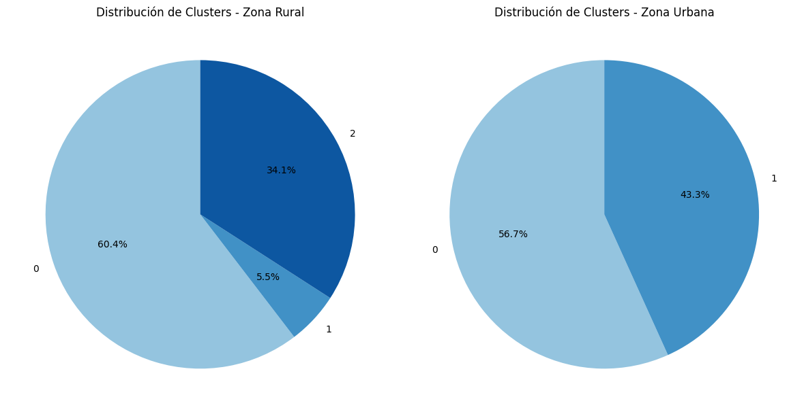
# Comparación de nivel educativo por zona con escalas propias
g = sns.catplot(
data=comparacion_data,
x="NIVEL_EDUCACION",
col="ZONA",
kind="count",
hue="CLUSTER",
col_wrap=2,
height=5,
sharey=False # ← esto permite escalas independientes
)
g.set_xticklabels(rotation=90)
g.fig.subplots_adjust(top=0.9)
g.fig.suptitle("Distribución de Nivel Educativo por Zona y Cluster (Escala independiente)")
plt.show()
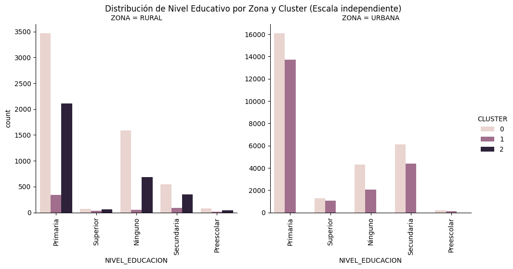
Comparara seguridad social entre clusteres
resumen_seguridad = comparacion_data.groupby(["ZONA", "CLUSTER"])["SEGURIDAD SOCIAL"] \
.agg(lambda x: x.mode().iloc[0]).reset_index()
resumen_seguridad
| ZONA | CLUSTER | SEGURIDAD SOCIAL | |
|---|---|---|---|
| 0 | RURAL | 0 | Subsidiado |
| 1 | RURAL | 1 | Subsidiado |
| 2 | RURAL | 2 | Subsidiado |
| 3 | URBANA | 0 | Subsidiado |
| 4 | URBANA | 1 | Subsidiado |
g = sns.catplot(
data=comparacion_data,
x="SEGURIDAD SOCIAL",
hue="CLUSTER",
col="ZONA",
kind="count",
height=5,
sharey=False,
palette="Set2"
)
g.set_xticklabels(rotation=45)
g.fig.subplots_adjust(top=0.9)
g.fig.suptitle("Distribución de Seguridad Social por Zona y Cluster")
plt.show()
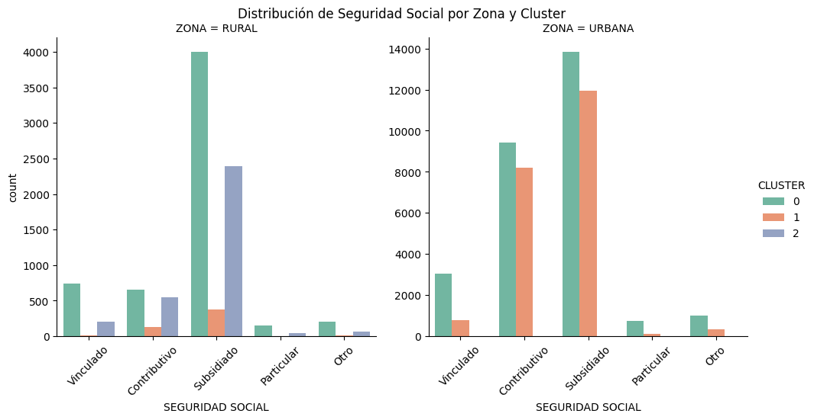
Comparación de estado civil y etnia
resumen_etnia = comparacion_data.groupby(["ZONA", "CLUSTER"])["ETNIA"] \
.agg(lambda x: x.mode().iloc[0]).reset_index(name="ETNIA_DOMINANTE")
resumen_estado_civil = comparacion_data.groupby(["ZONA", "CLUSTER"])["ESTADO_CIVIL"] \
.agg(lambda x: x.mode().iloc[0]).reset_index(name="ESTADO_CIVIL_DOMINANTE")
# Unir ambas
resumen_categorico = resumen_etnia.merge(resumen_estado_civil, on=["ZONA", "CLUSTER"])
resumen_categorico
| ZONA | CLUSTER | ETNIA_DOMINANTE | ESTADO_CIVIL_DOMINANTE | |
|---|---|---|---|---|
| 0 | RURAL | 0 | Ninguno de las anteriores | Soltero |
| 1 | RURAL | 1 | Ninguno de las anteriores | Soltero |
| 2 | RURAL | 2 | Ninguno de las anteriores | Soltero |
| 3 | URBANA | 0 | Ninguno de las anteriores | Soltero |
| 4 | URBANA | 1 | Ninguno de las anteriores | Soltero |
tabla_etnia = pd.crosstab(
index=[comparacion_data["ZONA"], comparacion_data["CLUSTER"]],
columns=comparacion_data["ETNIA"]
)
# Conteo de estado civil por cluster y zona
tabla_estado_civil = pd.crosstab(
index=[comparacion_data["ZONA"], comparacion_data["CLUSTER"]],
columns=comparacion_data["ESTADO_CIVIL"]
)
g = sns.catplot(
data=comparacion_data,
x="ETNIA",
hue="CLUSTER",
col="ZONA",
kind="count",
height=5,
sharey=False,
palette="Set2"
)
g.set_xticklabels(rotation=90)
g.fig.subplots_adjust(top=0.9)
g.fig.suptitle("Distribución de ETNIA por Zona y Cluster")
plt.show()
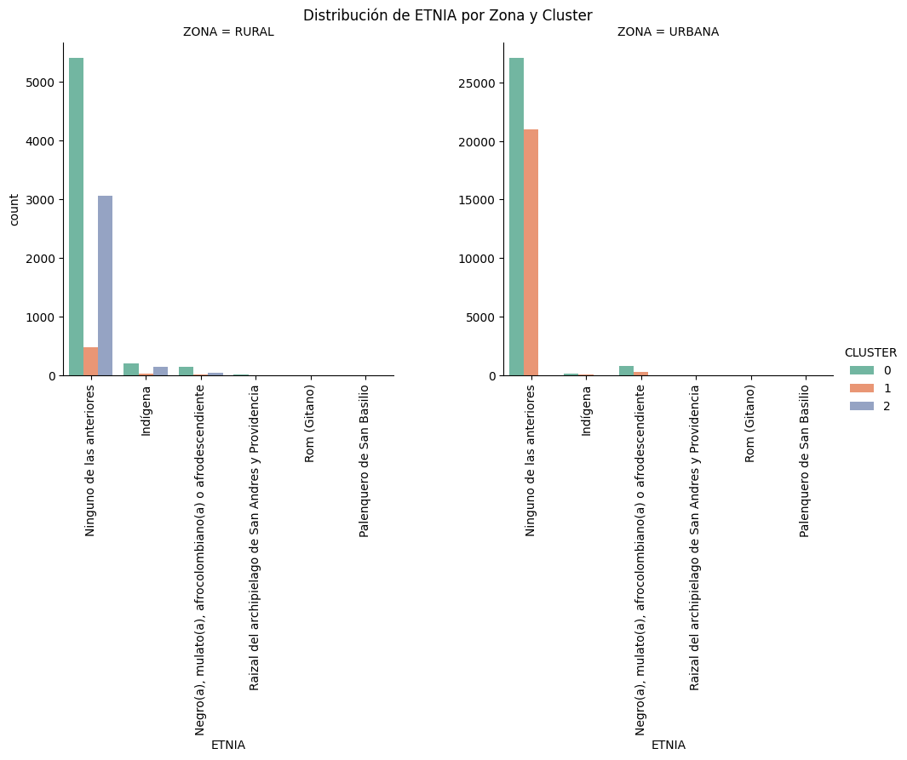
g = sns.catplot(
data=comparacion_data,
x="ESTADO_CIVIL",
hue="CLUSTER",
col="ZONA",
kind="count",
height=5,
sharey=False,
palette="Set2"
)
g.set_xticklabels(rotation=90)
g.fig.subplots_adjust(top=0.9)
g.fig.suptitle("Distribución de Estado Civil por Zona y Cluster")
plt.show()
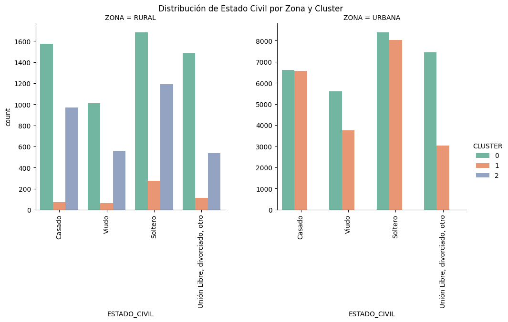
Comorbilidades
sns.boxplot(
data=comparacion_data,
x="CLUSTER",
y="NUM_COMORBILIDADES",
hue="ZONA",
palette="Set2"
)
plt.title("Número de Comorbilidades por Cluster y Zona")
plt.show()
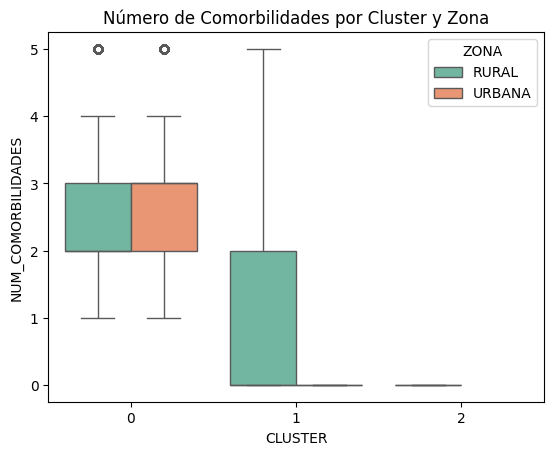
Se utilizará PCA para las comparaciones entre clusteres#
# Variables explicativas y objetivo
X = comparacion_data.drop(columns=["CLUSTER"]) # Todo menos el cluster
y = comparacion_data["CLUSTER"]
# Separar categóricas y numéricas
cat_vars = ["ESTADO_CIVIL", "NIVEL_EDUCACION", "ETNIA", "SEGURIDAD SOCIAL", "GRUPO_ETARIO"]
num_vars = ["PIB", "NUM_COMORBILIDADES"]
# Preprocesamiento
preprocessor = ColumnTransformer([
("cat", OneHotEncoder(handle_unknown='ignore'), cat_vars),
("num", StandardScaler(), num_vars)
])
# Modelo completo
pipeline = Pipeline([
("preprocess", preprocessor),
("clf", RandomForestClassifier(n_estimators=100, random_state=42))
])
# Entrenamiento
X_train, X_test, y_train, y_test = train_test_split(X, y, stratify=y, test_size=0.2, random_state=42)
pipeline.fit(X_train, y_train)
Pipeline(steps=[('preprocess',
ColumnTransformer(transformers=[('cat',
OneHotEncoder(handle_unknown='ignore'),
['ESTADO_CIVIL',
'NIVEL_EDUCACION', 'ETNIA',
'SEGURIDAD SOCIAL',
'GRUPO_ETARIO']),
('num', StandardScaler(),
['PIB',
'NUM_COMORBILIDADES'])])),
('clf', RandomForestClassifier(random_state=42))])In a Jupyter environment, please rerun this cell to show the HTML representation or trust the notebook. On GitHub, the HTML representation is unable to render, please try loading this page with nbviewer.org.
Pipeline(steps=[('preprocess',
ColumnTransformer(transformers=[('cat',
OneHotEncoder(handle_unknown='ignore'),
['ESTADO_CIVIL',
'NIVEL_EDUCACION', 'ETNIA',
'SEGURIDAD SOCIAL',
'GRUPO_ETARIO']),
('num', StandardScaler(),
['PIB',
'NUM_COMORBILIDADES'])])),
('clf', RandomForestClassifier(random_state=42))])ColumnTransformer(transformers=[('cat', OneHotEncoder(handle_unknown='ignore'),
['ESTADO_CIVIL', 'NIVEL_EDUCACION', 'ETNIA',
'SEGURIDAD SOCIAL', 'GRUPO_ETARIO']),
('num', StandardScaler(),
['PIB', 'NUM_COMORBILIDADES'])])['ESTADO_CIVIL', 'NIVEL_EDUCACION', 'ETNIA', 'SEGURIDAD SOCIAL', 'GRUPO_ETARIO']
OneHotEncoder(handle_unknown='ignore')
['PIB', 'NUM_COMORBILIDADES']
StandardScaler()
RandomForestClassifier(random_state=42)
# Extraer importancias
importances = pipeline.named_steps["clf"].feature_importances_
feature_names = pipeline.named_steps["preprocess"].get_feature_names_out()
# Ordenar
indices = np.argsort(importances)[::-1]
top_n = 20
# Gráfico
plt.figure(figsize=(10,6))
plt.barh(range(top_n), importances[indices][:top_n], align='center')
plt.yticks(range(top_n), feature_names[indices][:top_n])
plt.title("Top 20 variables que distinguen los clusters (urbano vs rural)")
plt.gca().invert_yaxis()
plt.tight_layout()
plt.show()
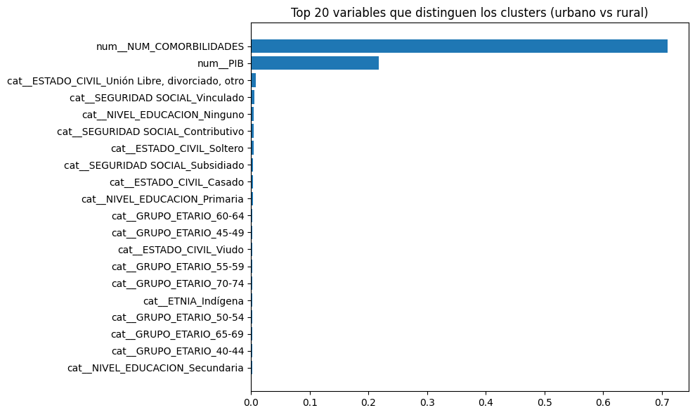